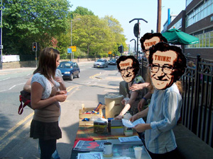

Submitted on Mon, 06/11/2007 - 3:10am
More than 150 people have signed a petition pledging to boycott WHSmith over plans to relocate Leicester's flagship post office.
Their signatures were collected in a few hours on Saturday during a protest outside the post office in Bishop Street.
The protest was organised by the Industrial Workers of the World union (IWW), which is campaigning against the branch's relocation to the basement of WHSmith, in Gallowtree Gate.
Stuart Price, from IWW, said the union felt a boycott would be the most effective way of letting bosses at Royal Mail and WHSmith know how strongly people opposed the move.
He said response to the petition had been "very positive".
Leicester's main post office is one of 76 branches nationwide that are to be relocated to WHSmith stores.
The Gallowtree Gate branch has started recruiting staff for the post office, and building work is under way.
Sandra Cutland, 40, from Braunstone, said: "They should keep it where it is."
John McKiernan, 44, of Knighton, Leicester, signed the pledge along with his mother, Iris.
He said: "Hopefully, with people signing this pledge and sticking by it, WHSmith will have to listen to what people are saying."
A spokeswoman for WHSmith said people had the chance to raise concerns about access during the consultation period on the relocation.
She said: "We would be extremely disappointed if they felt boycotting WHSmith would be the best way of saving the post office and keeping it where it is."
Customers wanting to comment on the proposed changes should write to: Philippa Wright, National Consultation Manager, Post Office Limited, c/o National Consultation Team, PO Box 2060, Watford WD18 8ZW.
The closing date for comments is June 20.
Submitted on Fri, 06/08/2007 - 12:43pm

Troubled train operator, First Great Western, already short of drivers, has taken the bizarre step of sacking a driver for swearing at a colleague during an argument, claiming that the swearing was "threatening."
Sacked Bristol driver Patrick Spackman said: "I regret swearing at him. And I regret referring to his weight. But for management to call this 'gross misconduct' is just ludicrous. I'm afraid that this kind of language is used all day and every day on the railways and if the company is going to start sacking people for it they won't have many drivers left."
First Great Western boss Alison Forster is already under pressure over the company's poor services. Last year Early Day Motions were tabled in Parliament condemning reductions in services and now David Drew, MP for Stroud, has tabled an EDM calling for First Great Western services to be run in the public sector.
Submitted on Tue, 05/15/2007 - 3:54am
Text by Rob X355616 and Photo by Stephanie X360677
Early May and Leicestershire IWW was involved in a host of diverse activities, ranging from participation in the May Day demo, running a stall at a local Social Forum event, flyering a local blood donor surgery as part of the National Blood Service dispute, and engaging in IWW social activities.
As the official Leicester Trades Council march was to be held on the 5th May, Leicester Wobblies decided to celebrate the real May Day with a social event at a cheap and friendly local Indian vegetarian place. The new local branch is a great believer in the notion that, 'people who play together will fight together' so social events are seen as essential for not only building branch cohesion but also for bringing new members into the local Wobbly scene.
Saturday 5th May we mobilised 15 Leicestershire Wobblies and were joined by a couple of members from Cambridge and Milton Keynes for the Trades Council march to defend public services.
Submitted on Wed, 05/09/2007 - 3:51am
Originally posted by Sheffield Food Not Bombs to uk.indymedia.org on May 8, 2007.
On Saturday 5th May Sheffield Food Not Bombs staged a picket outside the Broomhill branch of Starbucks in solidarity with the IWW’s “Justice from Bean to Cup” campaign:
"Justice from Bean to Cup!" - A Human Rights Campaign in Solidarity with Starbucks Baristas and Coffee Farmers
Despite its attempt to create a socially responsible image, Starbucks’ failure to meaningfully embrace Fair Trade coffee and transparent purchasing has left coffee farmers and their children teetering on the brink of starvation in the Global South.
In Starbucks cafes, baristas are paid a poverty wage and the company insures a lower percentage of employees than Wal-Mart. Starbucks baristas are organizing a union with the IWW (Industrial Workers of the World) for a better life on the job in the face of a fierce and unlawful union busting effort by the world's largest coffee chain.
The stall itself ran unexpectedly smoothly. Free coffee, tea, jaffa cakes and crisps were offered as an alternative to the overpriced drinks and food sold by Starbucks. The manager, who not surprisingly failed to appreciate the irony of Food Not Bombs using the same “aggressive marketing” strategy Starbucks uses to force other local coffee shops out of business, demanded the picket leave immediately else the police would be called. However, when the police showed it became clear that they dislike Starbucks’ attitude to employees and humanity in general as much as Food Not Bombs do, allowing the picket to continue. On the whole it was great to see so many members of the public actively interested in the disgraceful role Starbucks plays in union busting and abusing third world developers.
Submitted on Wed, 04/11/2007 - 12:55pm
 The National Blood Service performs a vital role in collecting blood from donations from 100's of sites daily, testing the blood for Hepatitis, HIV, Malaria and Syphilis and filtering the blood and separating into components. They must then distribute it promptly to hospitals. There are centres that perform these functions in Oxford, Bristol, Southampton, Tooting, Colindale, Brentwood, Manchester, Birmingham, Liverpool, Newcastle, Cambridge, Sheffield and Leeds.
The National Blood Service performs a vital role in collecting blood from donations from 100's of sites daily, testing the blood for Hepatitis, HIV, Malaria and Syphilis and filtering the blood and separating into components. They must then distribute it promptly to hospitals. There are centres that perform these functions in Oxford, Bristol, Southampton, Tooting, Colindale, Brentwood, Manchester, Birmingham, Liverpool, Newcastle, Cambridge, Sheffield and Leeds.
Staff have been in industrial dispute with the NBS board of directors and management for about a year, over unworkable reconfiguration plans which will see local processing and testing sites condensed into just three 'supercentres', in Bristol, Manchester and Colindale.